在这里我们很有必要讨论量化策略的有效性，并检验策略的成功是否依赖于小概率事件并未发生，策略能否抵御极端情况的发生。
2005年12月8日，日本瑞穗证券公司的一名经纪人在交易时出现重大操作失误，引发投资者恐慌并导致证券类股票遭遇重挫，东京证券交易所陷入一片混乱这个错误发生在当天上午开盘后不久。瑞穗证券公司一名经纪人接到一位元客户的委托，要求以61万日元(约合4.19万人民币)的价格卖出1股J-Com公司的股票。然而，这名交易员却犯了个致命的错误，他把指令输成了以每股1 日元的价格卖出61万股。
这条错误指令在9时30分发出后，J-Com公司的股票价格便快速下跌。等到瑞穗证券公司意识到这一错误，55万股股票的交易手续已经完成。为了挽回错误，瑞穗发出了大规模买入的指令，这又带动J-Com股票出现快速上升，到8日收盘时已经涨到了77。2 万日元(约合人民币5.3万元)。回购股票的行动使瑞穗蒙受了至少270亿日元(约合18.5亿人民币)的损失。
此次事件中最冤枉的瑞穗证券公司是哑巴吃黄连，有苦说不出。而遭受损失的还有众多的散户，因为当天有不少散户只听到了有证券公司出现操作失误将遭遇大规模亏损的传言，却不知道具体是哪家公司，因此只好把证券公司的股票一股脑地抛售，在短短几个小时内，上市公司的股票被抛售一空。股票持有者生怕自己买的公司就是那个倒楣蛋，也清仓出售。
2007年3月8日，南京一股民以1厘钱的价格买到收盘价近0.70元的海尔认沽权证 ，资金瞬间从820元变56万，一天炒出了700倍的收益！
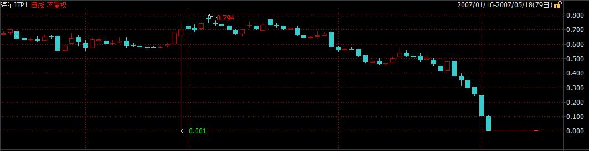
“说实话我也没想到真的会成交。”这位股民称，收盘之后他查了一下自己的帐户，一下子多出了50多万。“我想是不是搞错了？以前也有一次，因为系统出错，我的帐户上多出了100多万。”但是这次张浩仔细看了盘面之后，确信这次50多万是真的到了自己的帐户上。“因为今天的盘面上我看到了1厘钱的成交价格。我一共买到82万份海尔认沽权证。”
1厘钱能买到权证的概率有多大？证券公司专业人士称，这样的概率简直就和中六合彩一样。“这种情况发生，只有在一种情况下，那就是在9：25分-9：30之间，首先要有人挂出按市价委托的卖单，卖单先进交易所，同时没有什么买单。然后，这位股民挂出了1厘钱的买单，买单后进交易所。”以前从来没有人挂过按市价委托的单子。就这一次机会，就让他给碰上了。
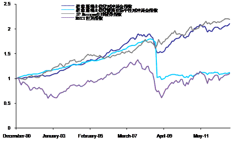
2007年8月6日-8月9日，许多历史上非常成功的量化对冲基金突然出现了大幅亏损，净值波动幅度远远超过历史平均水准。例如以业绩优异著称的文艺复兴公司(Renaissance Technologies Corp)就向投资者报告旗下一只主要基金8月初损失达8.7%，另外Highbridge的损失为18%，Tykhe的损失为20%，Goldman Global Equity的损失为30%。造成这一现象的重要原因就是当时主流量化模型的类似性。当时股票市场仍处于牛市之中，各家对冲基金基于类似研究成果建立的量化模型都给出了趋同的操作建议，短期内各对冲基金获利颇丰。但是当时许多对冲基金使用的是相同的协力厂商风险评估模型，根据模型评估结果，对冲基金们又开始实施类似的风险调整。短期内大量类似的交易需求造成了对市场的冲击，放大了对冲基金的损失。
2010年，彭博通讯社、美国国家广播公司财经频道等财经媒体曾报导，根据多个消息来源，在美国东部时间2010年5月6日下午2时47分左右，一名交易员在卖出股票时敲错了一个字母，将百万误打成十亿，导致道钟斯指数突然出现千点的暴跌。2010年美国东部时间5月6日，当天从下午2点42分到2点47分之间，道钟斯指数从10458点瞬间跌至9869.62点，与前一交易日收盘相比，下跌了998.5点。Accenture的股价被打至每股1分，Apple则升至每股10万。与此同时，资本市场出现了一系列连锁反应，E-mini S&P 500 2010年6月指数期货出现了40亿的卖单，高频交易者接单10分钟后，由于仓位元管理需要斩仓，这时市场无流动性，更低价钱出手，高频交易者之间相互倒手，放大交易量和振幅。期现套利者进场，波动传至股票，ETF，衍生品市场，进而传递到整个金融市场。
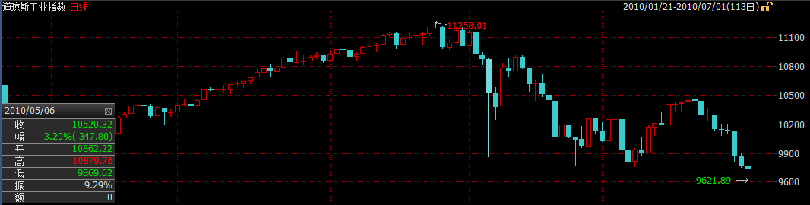
到2点58分，道指又回到10479.74点。这是道钟斯指数历史上第二大单日波幅。
2012年5月18日，Facebook 上市首日由于NASDAQ遇到技术问题，推迟30分钟开市。当时撮合系统计算速度为40us，由于Facebook上市首日订单太多，需要花5ms。因为客户可以更改订单，这5ms有新的订单或撤单，交易所撮合系统从头计算，又产生延迟，客户再下单改单撤单，造成闭环。推迟30分钟开盘后，问题又延续了好几个小时，客户因无法成交或成交多过报单数损失约1亿美金。
同样的事情发生在BATS，第三大交易所上。2012年3月23日，BATS上市首日程式中的bug把交易代码写错了，造成闭环，股价在900毫秒的时间内从16美元跌至仅几美分。系统无法识别，无奈BATS停止了交易，并最终取消了IPO。
骑士资本是美国最大的经纪商和做市商之一，2011年它处理了超过10%的美国上市股票交易量，在纽交所和纳斯达克交易所零售股票交易业务中排名第一。2012年8月1日一次致命的交易系统故障中它损失4.4亿美元，接近破产边缘，最终被Getco LLC收购。2013年，美国证监会对其处以1200万美元罚金。
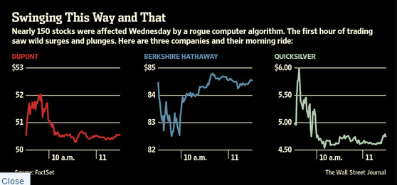 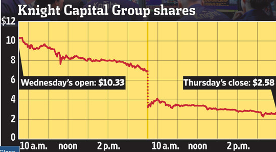
我们都知道交易股票应该低买高卖，起码正常的交易员都是这么理解的并且这么做的，反过来做的话那就是在亏钱。而据Nanex的分析，这正是骑士资本那个疯狂的交易程式所做的。换句话说，作为做市商角色的骑士资本，其交易程式所发出的报价并非是通过限价交易为市场提供流动性，而更像是市价指令。作为做市商，其通过向市场提供流动性获益，即设置在买入价和卖出价的限价指令。而骑士资本的交易程式做的完全相反，他实际上在吸收流动性并为此付费，尽管这一流动性导致的是亏损而非收益。
Nanex对纽交所提供的Exelon Corporation（EXC）的交易报告做了分析，通过对这一受影响的股票交易进行研究，展示出骑士资本的“疯狂”交易程式是如何进行操作的。
1.下图是是EXC的1秒为间隔的交易图。图中的圆圈是发生的交易，蓝点是纽交所的买入价和卖出价，这些价格大部分被连接这些交易的灰色线所覆盖。
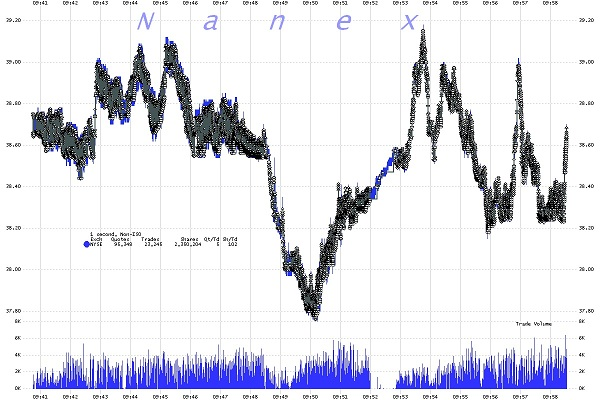
2.下图是放大后的27秒交易资料。在这张图里，连接交易的灰色线更加清楚，纽交所的买入/卖出价是蓝色的阴影区域（阴影区的底部是买入价，而顶部是卖出价）。
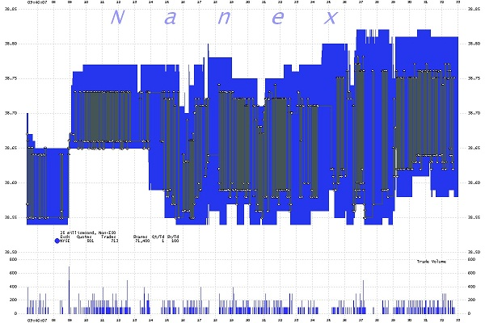
3.下图是放大后1毫秒间隔图，我们可以看到一秒钟的资料中包含了39笔交易。注意这些交易是如何从买入价到卖出价之间来回执行的。这就像是一个人在卖出价买入，随后在10豪秒后又在买入价卖出，并不断重复。这意味著损失了买入和卖出价之间的溢价。在EXC的案例中，这意味著每笔交易亏损约15美分。该交易每秒执行40次，每分钟2400次，这显然是个很有效率的烧钱程式。
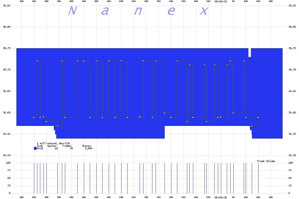
正如Nanex所分析的，该程式高买低卖，并不断重复。而由于骑士资本这一“疯狂”程式所导致的交易逻辑混乱，当日很多的股票交易都出现了异常，推高了股价，因为在这一程式下，股价越高，该程式就越有动力继续买入推高股价。这就解释了为何不仅交易量飙升，而且股价也随之走高，如中国脐带血库（CO）暴涨了数百个百分点。
而值得注意的是，由于这既非误操作（fat finger)也非一笔交易覆盖所有报价触发熔断机制的错误交易程式，而是一个缓慢的有条不紊发生的交易，这并不符合当前SEC的报价取消规则，因此没有理由取消骑士资本“疯狂”程式导致的这些交易。
客户的一个交易单过来，Knight并不一定是直接把交易单直接扔到市场上去交易（尤其是这个交易单比较大的情况）。为了客户的利益，根据市场流动性情况和交易情况，经纪商可能需要帮助客户把交易单拆分成小交易单放到市场上去成交。
Knight使用一个叫做SMARS的系统用来做上面这件事情。调查报告中声称SMARS系统处理了美国上市股票超过1%的交易量。SMARS有一个叫做「Power Peg」的模组，在2003年被停用。但是这个模组从未被删除或者停用，而是一直处于待命状态，只要系统的某一个特殊的参数被设置为「YES」，该模组就会被调用用来交易。
SMARS在将大单拆分成小单分批报送交易所进行成交时，它必须维护一个数：这个大单目前还剩下多少股未处理或在途。每报送一个新小单时，都应该扣减未处理的股票股数。在2005年，Knight移除了Power Peg模组中的这个计数功能。
纽交所将在8月1号启动一个叫Retail Liquidity Program（简称RLP）的项目。（注：这个Retail Liquidity Program的介绍见这里。我没看明白它的作用。）
为配合RLP项目的启动，Knight也更新它的SMARS程式。程式师完成了一个新的RLP模组，RLP专案客户的交易使用这个RLP模组来执行。这个模组被设计取代之前的「Power Peg」模组。取代后，之前那个特殊的参数被设置为「YES」，意思是使用RLP模组。
但不幸地是，从7月27日Knight开始在它的八台伺服器上部署RLP代码时，其中七台机器顺利安装，操作人员失误忘记在第八台伺服器上更新程式。8月1日，Knight接收到客户的交易单。前七台伺服器一切正常，最后一台机器出现了悲剧。为了启动RLP模组，前面提到的特殊的参数被设置为「YES」，但这台伺服器上并没有RLP模组，只有「Power Peg」模组。「Power Peg」模组在被停用后的第10年被启动了。前面提到Knight在2005年就删除了这个模组的股份计数功能，也就是说这个模组根本不明白客户的单子已经被报送过到了，从而周而复始地向交易所提交交易单，引发了市场的大幅波动。其中有75档股票，Knight的交易量超过市场交易量的20%，并直接推高股票价格至少5%；其中37档股票，Knight的交易量超过市场交易量的一半，并直接推高股票价格至少50%。
事后统计显示：这台伺服器共接收了212个客户交易单，但它在45分钟内向交易所报出了几百万个小交易单，其中超过400万交易被成交，涉及154档股票，总成交股数超过3.97亿股。停止交易后，Knight持有80档股票共35亿美元的净多头以及74档股票共31.5亿美元的净空头。当天总损失4.5亿美元。
2012年9月25日，SEC处罚Hold Brothers On-Line Investment Service通过境外帐户操纵市场价格。操作手段是高科技的：
当时（bid=101.27，ask=101.37）。
11:08:55.152，卖1000股GWW，价格$101.34。
inside=（bid=101.27，ask=101.34）
连续放11个买单，共计2600股，比如
11:08:55.164，买300股GWW，价格$101.29
11:08:55.164，买500股GWW，价格$101.30
……
11:08:55.323，买600股GWW，价格$101.33
inside=（bid=101.33，ask=101.34）
造成bid的连续上升，给其他人有价格上涨的趋势。
11:08:55.333 有人进场，1000股的$101.34的卖单成交
11:08:55.932 撤所有买单。
11:08:55.991 inside恢复成（bid=101.27，ask=101.37）
这些操作在1秒之内完成。
2013年8月16日，一月一度的沪深300股指期货交割日，恐怕将成为所有股票市场参与者，特别是股指期货交易者终生难忘的一天。这一天A股市场出现了罕见的暴动，上证指数几乎在一分钟内跳升了80点，中石油、中石化为首的权重股集体瞬间涨停。
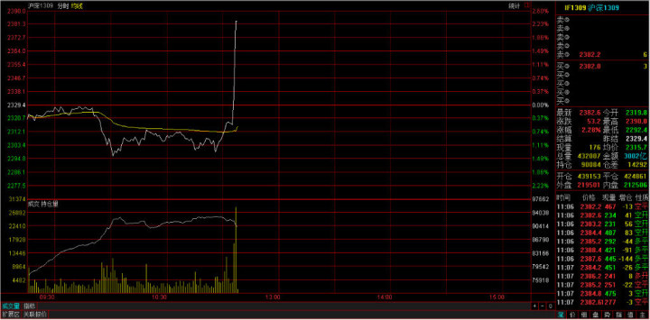
事后调查表明，光大证券策略投资部的套利策略系统由于设计缺陷出现故障，出现价值234亿元人民币的错误买盘。
2014年1月30日， 公司A从客户处收到订单，要求购买250万美元汇丰集团股票。交易员A误解了客户的需求，认为客户需要购买250万股汇丰股票。请注意，虽然这是一个大错误，但却不是致命的错误。他随即使用公司B提供的电子交易服务，通过程式交易，买入250万股汇丰股票。该交易员使用了交易量百分比(Percentage of Volume)演算法，将参与率设置为20%，并没有设置价格上限。(所谓参与率20%，即该演算法将不断计算实际交易量，并在每个时段购买该时段市场总交易量20%的股票。）
交易量百分比演算法会自动买入股票，直至达到预先设定的交易量。而由于交易员A没有设置价格上限，该演算法将不考虑价格，持续买入股票，直至交易完成。
在这里，电脑系统试图挽救交易员A的失误。由于公司A对单笔交易的上限有所限制，一旦交易金额超过规定金额，交易将被自动拒绝。买入250万股汇丰股票的交易超过了该上限，因此被公司B拒绝。由于没有处理该问题的规范流程，交易员A联系了B公司的交易员B，咨询如何下单。
交易员B推荐交易员A将订单分成5笔，每笔50万股。交易员A按照建议，将订单分成了5笔，但他依然将每笔订单的参与率设为了20%。这才是真正致命的错误！这样一来，交易员A的五笔交易事实上在互相竞争，购买250万股，参与率为100%。也就是说，他买下了市场当时所有的交易量。因此，汇丰股价在一分钟内从6.29英镑上升至6.88英镑。
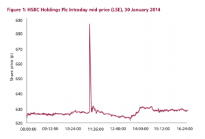
交易员A将250万美元误解成250万股，虽然是一个大错误，但却不是价格飙升的主要原因。虽然250万股是一个大订单，但是20%的参与率让其不会引起市场的直线飙升。关键的问题是交易员A同时下了五笔参与率20%的订单，却没有设置价格上限。
2014年5月16日上午9点25分，交易所债券PR镇城投（122794）以100元成交一笔6369手的交易。诡异的是，该债券交易价格较前一交易日收盘价涨幅高达42.11％。
“这是机构下错单导致的债券开盘乌龙。”一位私募债券基金经理透露，上交所3月初修改交易所债券规则后，PR镇城投目前的票面价格应是70元，而不是100元。
上午9点25分，PR镇城投成交6369手，每手代表10张债券。按照100元的申报价格，这笔交易总共成交金额636.9万元。而前一个交易日，该债券的成交价是70.37元。
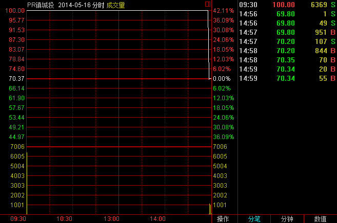
“PR镇城投的票面价是70元，但机构每张多花30元，即总投资损失约191万元。”前述私募债券经理指出，债市出现如此大笔金额成交，只能是机构资金所为。出现这种情况，原因可能有两种，一种是债券基金经理不清楚交易所修改了规则，二是交易员敲错单子。
上交所披露的公开信息显示，3月3日起，采用减少面值方式处理债券分期偿还业务，提高债券分期偿还业务办理效率。上交所在相关通知中称，债券发行人在分期偿还本金时，投资者帐户中的债券持仓数量保持不变，1手债券对应的债券面值相应减少。
当债券发行人偿还部分本金时，上交所将依据调整公式“分期偿还后开盘参考价＝分期偿还日前收盘价－100×本次偿还比例”计算该债券分期偿还日的开盘参考价。例如，“09长城开”是首只采用减少面值方式处理债券分期偿还业务的债券，其在2014年3月9日即按照发行金额30％偿还债券本金。“09长城开”在分期偿还首期本金后，面值由100元变为70元。债券简称变成“PR长城开”。
“PR的意思是债券发行方已经偿还了部分本金，相当于股票的除权性质。PR镇城投已经偿还30％的本金，债券面值变成70元。”一家券商固定收益部人士介绍，3月31日，122794这只债券就已新增PR标识。
目前，PR镇城投已经停牌，外界无法得知究竟是哪家机构下错单导致开盘乌龙。但可以确定的是，这笔交易导致这家机构损失约191万元。
日本场外市场（OTC市场）2014年10月1日取消了一些总额超过瑞典的GDP规模的乌龙指订单，而这也可能是迄今为止规模最大的乌龙指订单。
据彭博新闻社的资料显示，当日日本场外市场共有涉及42家公司股票的总额达到67.78万亿日元（约合3800亿英镑）的订单被取消。其中最大的一笔订单为购买57%的丰田汽车公司股票，即19.6亿股丰田汽车公司股票。其它一些被取消的订单涉及索尼公司、本田公司和野村证券公司的股票。
正因为这些订单是在场外市场进行交易，所以交易商才有时间在订单被执行前进行取消。场外交易相当于交易直接在买家和卖家之间进行，而没有通过交易所。
2011年以前，瑞士法郎被国际视作传统的避险货币。瑞士是国际上闻名的中立国，加上银行保密制度严格，一旦国际政治局势紧张，瑞朗成为投资者资金转移的首选，而且瑞士是经常账户盈余国家，投资者也乐于持有瑞朗，这导致瑞朗在全球金融危机、欧债危机和中东局势紧张的背景下不断升值，严重影响了瑞士经济支柱的出口。瑞士央行于2011年9月起实行瑞郎兑欧元1.2000的汇率上限。
然而瑞士央行2015年1月15日出乎预料宣布放弃实施三年之久的汇率上限，引发瑞郎全线暴涨，单日波幅创1970年代多数主要货币实行自由浮动机制以来最大，其中美元兑瑞郎挫至2011年来最低的0.7407，欧元兑瑞郎一度崩跌至0.8597。
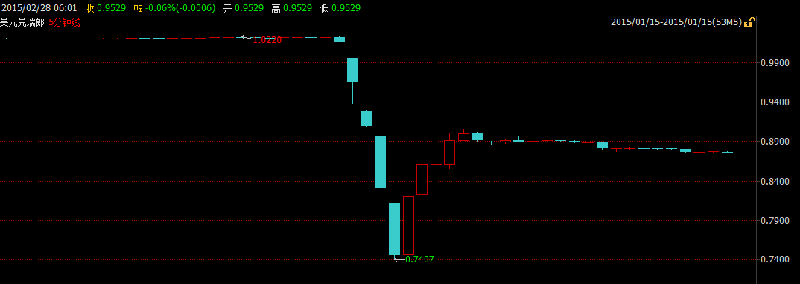
与此同时，瑞郎惊天暴涨引发的联动效应导致外汇交易市场的急剧动荡，造成众多投资者出现严重亏损，甚至出现大量负值帐户。多家外汇交易商也因填补客户的负值帐户导致大量亏损，其中艾福瑞因此事件在英国已申请破产；纽西兰交易商Global Brokers NZ Ltd亦宣布公司破产；FXCM福汇美国最大的零售外汇交易商则亏损2.25亿美金，且福汇当天股价暴跌80%；除此之外还有更多外汇交易商遭受了不同程度的损失。
根据CME Group资料，截至1月11日，投机商所持瑞郎净空仓为截止2013年6月9日当周来最多。最新资料显示，对冲基金和其他投机商净持有24,171口空头期货合约以及另外662口期权合约，合计24,833口空头合约，价值约35亿美元。每张合约价值12.5万瑞郎。毫无疑问，对冲基金等投机商因瑞郎大涨损失最为惨重。
在瑞士央行爽约之前，在1.2000附近做空瑞朗，待瑞朗汇率下跌后了结空头仓位成为对冲基金利润丰厚的套利策略，市场几乎一致认为瑞士央行会信守诺言，以至于当瑞士央行宣布放弃1.2000的汇率上限时，交易员的第一反应是“假消息”，因而汇率价格在开始阶段反应较慢，之后随着价值高杠杆者逐步爆舱发生踩踏效应，汇率价格发生了数次过山车式的暴涨暴跌，1个小时后价格才趋于平稳。
上证50ETF期权平稳运行两日后，第三个交易日出现了一个意外状况。
2015年2月11日下午13点3分12秒，合约50ETF购4月2400、50ETF购4月2450价格出现大幅异常。其中合约50ETF购4月2400的价格在13：03:10～13:03:12之间从0.1006元跌至0.001元（跌幅达99%），合约50ETF购4月2450在13:03:11～13:03:12之间从0.0808元跌至0.001元，均触发熔断机制。
上证所在初步核查后表示，触发这两次熔断的原因是一家做市商（中信证券）在午间调整报价参数，导致大幅偏离理论价值的报单所致。
来自机构的错单
上证所盘后公布的资料显示，13时3分10秒至12秒，中信证券对50ETF购4月2400合约申报12笔卖单，申报价格从0.001元到0.0014元（其中0.001元的卖单6笔），每笔10张，共120张，共成交100张。其中，90张成交价格在0.0988元与0.1024元之间，最后10张成交价格为0.001元，触发了熔断机制。
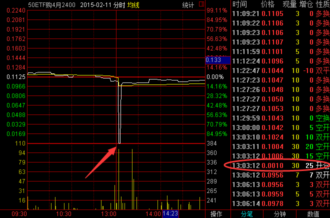
13时3分10秒至12秒，中信证券对50ETF购4月2450合约以0.001元价格申报11笔卖单，每笔10张，共110张，共成交80张。其中，76张成交价格在0.0798元价格与0.0828元之间，最后4张成交价格为0.001元，触发了熔断机制。
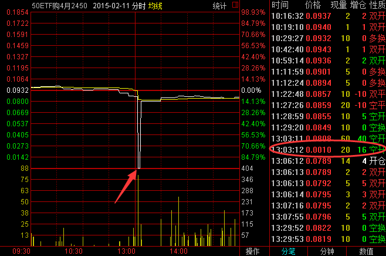
在交易系统启动熔断机制后，做市商进行了报价，50ETF购4月2400合约熔断集合竞价成交价格为0.0940元，50ETF购4月2450合约熔断集合竞价成交价格为0.1128元，价格恢复正常。
据上证所披露，熔断期间，中信证券对50ETF购4月2400合约进行了2笔共20张撤单，对50ETF购4月2450合约进行了3笔共30张撤单。由此，大幅偏离理论价值的报单对中信证券仅造成了约1万元的损失。
熔断标准待完善
昨日，上证所相关人士表示，熔断机制一是有助于市场价格恢复正常；二是可以有效降低错单导致的损失。在现有交易规则下，单笔限价指令报单最多10张合约。今天该帐户在熔断后熔断机制启动后，及时撤回了未成交的错单，避免其他错单的继续成交。
此前发布的《股票期权试点交易规则》（以下简称《规则》）显示，期权实行的熔断制度为：连续竞价交易期间，合约盘中交易价格较最近参考价格上涨、下跌达到或者超过50%，且价格涨跌绝对值达到或者超过该合约最小报价单位5倍的，该合约进入3分钟的集合竞价交易阶段。集合竞价交易结束后，合约继续进行连续竞价交易。
“这两次熔断情况也反映出，目前我所ETF期权市场订单深度不足的现状。”上证所相关人士指出，“我所设置的ETF熔断标准为最新成交价与前一次集合竞价价格偏离50%，但由于目前市场订单深度不足，导致这两次触发熔断的实际涨跌均大于50%，下一步可以根据市场深度对相关熔断标准作进一步研究和完善。”上述《规则》则明确，根据市场需要，交易所可以调整期权交易的熔断标准。
柴静的雾霾调查视频《穹顶之下》引发环保股暴涨，嗅觉敏锐的投资者自然也不会放过其中的投资机会。作为在上一轮行情中出尽风采的B级基金，也受到了众多投资者的青睐，均等待在周一开盘抢筹入场。 可是，“心急吃不了热豆腐”，据网友爆料，由于环保概念大热，很多人抢分级基金环保B，结果有位大户输入HBB，看也没看就买了排位靠前的回报B，1500万封涨停，不过很快就被砸回去了，因为回报B就是个债券基金。
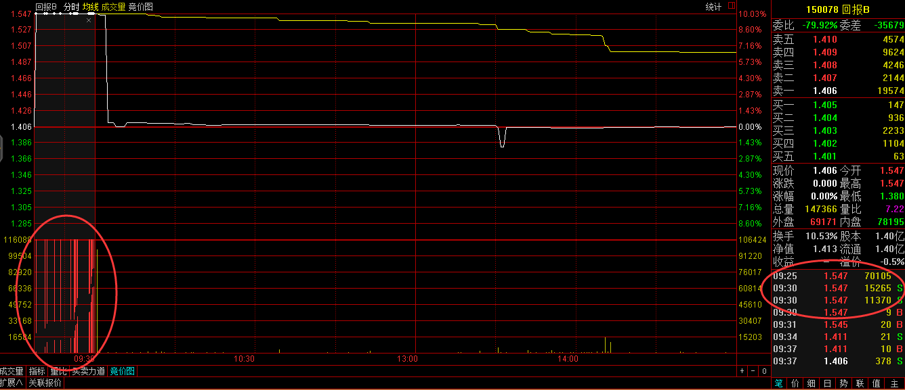
看来世界上最遥远的距离，不是生与死，而是都是HBB，为什么别人买的是环保B，自己买的却是回报B。 资料显示，回报B是分级债券型证券投资资金，其投资范围为固定收益类证券，包括国债、央行票据、金融债(含商业银行依法发行的次级债)、企业债、公司债、可转债(含分离交易可转债)、资产支持证券、短期融资券、回购、货币等固定收益类品种，国内依法发行上市的股票(包括中小板、创业板及其他经中国证监会核准上市的股票)、权证以及法律法规或中国证监会允许基金投资的其他金融工具等。
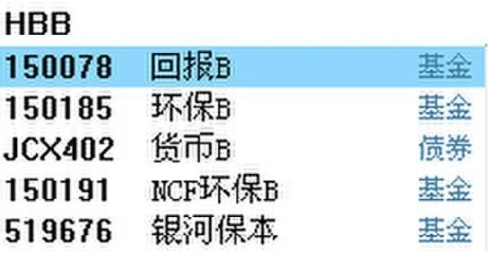
在股票软体商输入HBB，除了环保B外，在其上面就是回报B。平日交易并不活跃的回报B，在今日也收了一根长阴线，在其日K走势图上十分显眼。据交易资料显示，该大户在早上9点15以1.547元直接挂单，9点25以及9点30分别成交7.01万手和2.66万手。随后成交价格急剧回落至1.411元，收报1.406元，回报B今日共成交2208万而前一交易日仅仅成交800万，振幅11.88%，换手19.24%。
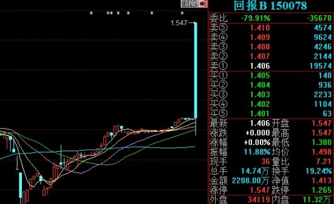
更可悲的是根据分级运作期届满与基金份额转换的公告，回报A和回报B基金份额转换日为基金合同生效之日起三年后的对应日。如该对应日为非工作日，则顺延到下一个工作日。回报B基金份额转换基准日为2015年3月9日。